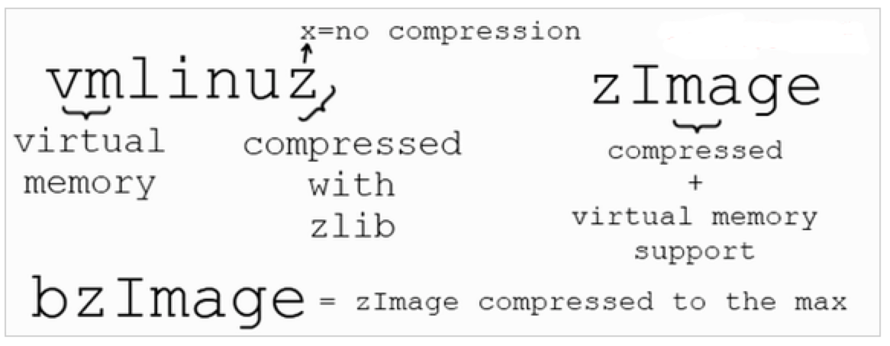

概述
- 本篇讲述 Linux 内核的一些基础知识
一 操作系统的本质
- 操作系统的本质:
for(;;) pause()
反映了操作系统的本质，即操作系统就是一个中断驱动的死循环代码。
- Linux 内核归根结底就是一支超大的 C 程序.
二 Linux 内核的组成
Ubuntu 中的内核文件存储在/boot 文件夹中，称为 vmlinux -version。vmlinuz 这个名字来自于 unix 世界，早在 60 年代，他们就把内核简单地称为“unix”，所以当内核在 90 年代首次开发时，Linux 就开始把内核称为“Linux”。
- vmlinuz-5.4.56.bsk.10-amd64

当开发虚拟内存以便更容易地进行多任务处理时，将vm放在文件的前面，以显示内核支持虚拟内存。有一段时间，Linux 内核被称为 vmlinux，但是内核变得太大，无法装入可用的引导内存，因此压缩了内核映像，并将末尾的 x 更改为 z，以显示它是用 zlib 压缩的。并不总是使用相同的压缩，通常用 LZMA 或 BZIP2 替换，一些内核简单地称为 zImage。
在/boot 文件夹中还有其他非常重要的文件，称为 initrd.img-version、system.map-version, config-version。initrd 文件用作一个小 RAM 磁盘，用于提取和执行实际的内核文件。这个系统。map 文件用于内核完全加载之前的内存管理，配置文件告诉内核在编译内核映像时要加载哪些选项和模块。
几种 linux 内核文件的区别(vmlinux、vmlinuz、Image、zImage、bzImage、uImage）
-
vmlinux: 是内核编译出来的原始的内核文件未经压缩的。是 ELF 格式的，即编译出来的最原始的文件。用于 kernel-debug，产生 system.map 符号表，不能用于直接加载，不可以作为启动内核。只是启动过程中的中间媒体。 -
vmlinuz: vmlinuz 是可引导的、压缩的内核。“vm”代表“Virtual Memory”。 vmlinuz 是由 ELF 文件vmlinux经过objcopy后，并经过压缩后的文件，它是可引导的文件。
vmlinuz 的建立有两种方式
-
- 一种是通过编译内核时通过“make zImage”创建，也就是 zImage，它适用于小内核的情况，适用于低端内存（640K），它的存在是为了向后的兼容性。
-
- 另外一种是通过编译内核时通过“make bzImage”创建，也就是 bzImage，它是压缩的内核映像，适用于高端内存（1M 以上）
-
Image: Image 是 Linux 内核镜像文件，但是 Image 仅包含可执行的二进制数据。Image 就是使 用objcopy工具取消掉 vmlinux 中的一些其他信息，比如符号表什么的。但是 Image 是没有压缩过 的. -
zImage: 是经过 gzip 压缩后的 Image, 一般用作 uboot 的镜像文件。 zImage 是 ARM Linux 常用的一种压缩映像文件. zImage 可以在嵌入式系统经常看到. -
uImage: uImage 是 早期U-boot专用的映像文件，它是在 zImage 之前加上一个长度为 0x40 的“头”，说明这个映像文件的类型、加载位置、生成时间、大小等信息。换句话说，如果直接从 uImage 的 0x40 位置开始执行，zImage 和 uImage 没有任何区别。现在u-boot已经支持zImage了, 不再需要制作专门的uImage. -
bzImage: bz 表示big zImage，不是用bzip2压缩的。两者的不同之处在于，zImage 解压缩内核到低端内存(第一个 640K)，bzImage 解压缩内核到高端内存(1M 以上)。如果内核比较小，那么采用 zImage 或 bzImage 都行，如果比较大应该用 bzImage。